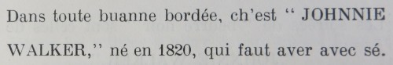

I' faut que j'vos raconte une aventuthe que j'eu au c'menchement du mais d'Janvi.
Un amin à mé qui d'meuthe dans iune des pâraisses d'amont, me rencontri dans la ville et m'dit comme chenna, "Caouain je veurs que tu vainje passer une séthée siez-nous. Tu aithas du fanne, j'ai acaté deuxtrais picots et je m'en vais inviter deustrais de mes amins pour v'nin jouer une gamme de cartes et les gagnants aithont châtchun lus ouaîsé."
"Oh!" j'lis dis, "je n'joue pas ès cartes mé! Ch'est iune des inventions du Satan, et j'ai tréjous ouï que v'là tchi mène à la ruine."
"Bah!" i' m'raîponni, "ch'est un tas d'niollin chenna! Une petite gamme de "Don" de peut pas faithe de ma à personne. Et pis pense don, si tu t'en allais gâgni un picot!"
La pôssibilité d'un patheil coup d'chance me fit mettre de côté touos mes bouans principes et j'accepti l'invitation.
Mais je savais bain que che s'en allait être une longue bordée et je n'avais pas idée de rester épithoté à siez milles de siez-nous dans les p'tites heuthes du matin, ch'est pourtchi i' falli trouver un parchonyi avec un "moto" pour faithe seux de r'venin.
J'en trouvi iun. Quand i' ouï qu'i' y'avait des picots à gâgni, i' n'se fit pas prier deux feis.
Mais comme mé, jamais i' n'avait joué à "Don." Enfin je nos trouvîmes au rendez-vous et j'étions six tout ensemblye. Les quatre autres étaient des joueurs de cartes de prumié classe et par les clyins qu'i' s'entre faisaient je nos doutîmes bain qu'i' s'attendaient de nos plumer comme-i-faut.
Comme je n'y connaissions rain ni l'un ni l'autre i' falli explitchi les conditions.
D'abord, je fûmes informés combain qu'les deux picots avaient couôté et qu'un châtchun contribuisse sa shâre.
V'là tchi s'ravenait à sept chelins et d'mi, sapresti!
Je crai bain que j'changi d'couleur, mais heutheusement, duthant la journée, Marie Hibou m'avait envié à payi des comptes et j'avais roublié de li r'donner l'change.
Ch'est pourtchi je dêboursi man p'tit lot avec l'apliomb d'un millionaithe.
Le préchain itème sus l'programme était de nos apprendre comment jouer à "Don."
Votre hôte produisit un patchèt d'cartes et une petite plianche avec un tas de p'tits creux de perchis d'dans. D'un but il y plianti une rangie d'allumenttes comme une compagnie d;soudards, pour, à ch'qu'i pathaît, mertchi les points, une tâche que nous a couôtume d'assigni au pus honnête de la compagnie. Les cartes furent mâlées et j'en r'chûmes châtchun six.
"Là Caouain! capuche, ch'est ta pitche!"
"Extchusez Messieux, mais vos pliaîtchi-t-i me donner l'interprétation de chu mot-là?"
"Mais, ch'est à té d'entablier, espèce d'idjot!"
J'avais tchiquefais veu nos garçons jouer à "Nap" dans l'imprimethie, dans des bordées que l'Chef était hors ès Etats, et comme j'avais l'as, le rouai et l'valet d'cârro, je les joui dans ch't ordre là.
L'individu qu'était assis à ma gauche fliantchi une carte sus la tablye et s'êcriyi "Là! le sacré Caouain m'a volé man djix!"
Dame! ch'tait un mio trop fort dja! La colèthe m'emporti et j'bondi hors de dans ma tchaîthe.
"Messieux," j'lus dit, "je n'sis pas v'nu ichin pour être insulté! J'ai 'té traité d'idjot et d'voleux dans l'couothant de mains de chinq minutes, ch'est pourtchi ou pouvez garder vos picots! Je m'en r'vais siez-nous, mé!"

L'affaithe s'en allait cauffer, mais i' m'firent tout-d'suite lus extchuses et l'maître d'la maison erêtablye la paix en dêbouchant une boutelle de "Johnnie Walker."
Le mertcheux se mins à examiner les cartes et bargouaîchi tchique chose qui m'pathu comme "Hallojackgame," mais je n'y viyais qu'feu, mé. I halli iun des p'tits soudards de sa pliaiche et l'fit marchi amont la plianche et je continuimes la même routine. Tchiquefais quand iun d'nos adversaithes jouait un as ou un rouai, man parchonyi m'disait "Cope avec tan chinq pour le sauver!"
J'obéissais, mé, aveuglyement il est vrai, mais j'avais confiance dans l'mertcheux et tandis qu'i' gardait m'n allumentte l'avant ès autres, che n'tait pas à mé de d'mander des tchestions.
Enfin tréjous i' vint un moment que l'mertcheux s'êcriyi "Ch'est l'Caouain qu'a gâgni l'picot!"
J'avais d'la peine à l'craithe et je fus tout êmutionné par les félicitations si bain qu'i' me r'fallit un p'tit lermin de "Johnnie Walker."
Je nos r'mînmes à jouer pour le deuxième ouaîsé et criyiz le s'ou voulez, mais ch'tait m'n amin du "moto" qui l'gâgni.
Il 'tait passé minièt quand j'entrîmes dans l'poulaillyi pour attraper nos prix et quand j'vi l'ênorme bête qui me v'nait j'étais bain gêné d'saver comment que je m'en allais me dêpliautchi.
Je r'pathîmes de les embertchi dans l'moto et nos v'là partis pour la ville.
Man compagnon me déposi à la porte du bureau avec man picot et se r'mins en route.
I' s'agissait acheteu de l'traîner amont les d'grès jusqu'à not'e mansarde.
Comment s'y prendre?
Je l'prins par les deux dgethèts et v'là tchi fut bain pour deustrais marches, mais à mié c'min l'affreuse bête se mins à battre d's ailes et che fut une lutte acharnée entre nos deux.
Duthant l'combat i'fit voler deux des balustres qui tchirent dans l'allée avec un horriblye frédas qui rêveillyi Marie Hibou et ou s'en vint dans sa c'minsole, avec une chandelle à la main, êpouvantér de ouï tant d'vacarme.
Mais devant qu'ou pusse se faithe une idée de tch'est qu'i' s'agissait, le vent causé par les ailes du maudit picot, êteignit sa chandelle et ou poussi un brèt et s'evanni sus l'plianchais.
Touos les p'tits caouains se minrent à faithe des huerles et v'là la position dans tchi qu'je m'trouvi.
Les mousses à braithe, Marie êvannie et mé crocheté à un ouaisé que je n'osais pas laissi courre.
I' n'y avait qu'une chose à faithe. Je le r'traîni avau les d'grèts et je l'enfrumi dans l'imprimethie.
Le lendemain au matin j'engagi un homme de vocation pour le tuer, le plumer et l'arrangi prêt à mettre au fou.
Dans l'entretemps, Marie Hibou m'en avait chanté de toutes les sortes, sus des vacâbons qui passent lus nyits à jouer ès cartes et qui r'vainnent siez ieux à la maintchi souards êpouvanter lus femme et lus êfants dans les p'tites heuthes du matin.
Mais quand ou vit le biau ouaisé tout prêt à tchuithe, ou changi bain vite sa note.
Ou m'embraichi sus les deux joues et m'dit comme chenna "Ah Caouain, je t'y renviêthons."
Malgré touos ses d'fauts, Marie est une bouanne tchuisinièthe et garçons, ou pâlez d'un fricot!
Caouain
8/2/1936
Viyiz étout: